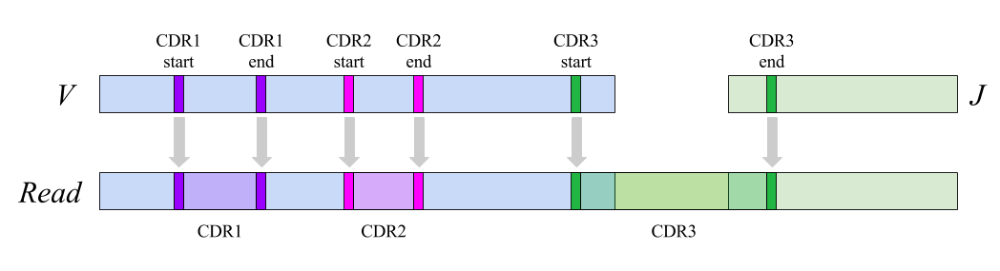

Introduction
Diversity Analyzer is a tool for annotation and diversity analysis of full-length adaptive immune repertoires (antibodies or TCRs). Diversity Analyzer is launched as a final step of IgReC. It is also available as a stand alone tool.
Input
Diversity Analyzer takes full-length immune sequences in FASTA/FASTQ format as an input. Tool expects that input sequences cover entire variable regions of antibody or TCR: from the start of V segment to the end of J segment. Tool is able to process raw Rep-seq libraries, as well as constructed repertoires.
Output
Diversity Analyzer performs V / J, CDR, and SHM labelings of input sequences; computes their diversity characteristics; computes nucleotide and amino acid substitutions; visualizes computed statistics and reports summary in user-friendly HTML format.
Output details
Table of content:- Summary report
- VJ labeling output
- CDR labeling output
- SHM labeling output
- Diversity statistics
- Nucleotide and amino acid substitutions
- Summary annotation report
1. Summary report
Diversity Analyzer compiles a report in TSV format including basic diversity characteristics of input sequences. For each input sequence, report contains information about:
- Chain type: IGH / IGK / IGL / TRA / TRB / TRG / TRD.
- V and J hits. Gene names are consistent with IMGT database.
- Amino acid sequence.
- Information about productiveness: presence of stop codon (1 or 0); in-frame (1 or 0); productive (1 or 0)
- Positions of CDR1, CDR2, and CDR3. Note that all positions are inclusive.
2. VJ labeling output
Diversity Analyzer launches VJ Finder (ultra-fast aligner of immunosequencing reads) for finding V and J hits for input sequences.
Based on computed VJ labeling, DiversityAnalyzer reports heatmap showing VJ usage:

2.1. V alignments
Diversity Analyzer reports all computed V alignments in FASTA file. Each alignment is presented as a pair of gapped sequences of equal length. Code below shows an example of V alignments in FASTA format for a single read-gene pair:
>INDEX:1|READ:1_merged_read|START_POS:0|END_POS:295
GAGGTGCAGTTGGTAGAGTCTGGGGGAGGATTGGTCCAGCCGGGGGGGTCCCTGAGACTCTCCTGTGCAGCCTCTGGATTCACCTTTAGTAGTTATTGGATGAGCTGGGTCC
GCCAGGCTCCAGGGAAGGGGCTGGAGTGGGTGGCCAACATAAAGCAAGATGAAAGTGAGAAATATTATGTGGACTCTGTGAAGGGCCGATTCACCATCTCCAGAGACAACGC
CAAGAAGTCACTGTCTCTGCGAACGAACAGGCTGAGAGCCGAGTACATGGCTGTGTATTACTGTGCGAGTAC
>INDEX:1|GENE:IGHV3-7*01|START_POS:0|END_POS:295|CHAIN_TYPE:IGH
GAGGTGCAGCTGGTGGAGTCTGGGGGAGGCTTGGTCCAGCCTGGGGGGTCCCTGAGACTCTCCTGTGCAGCCTCTGGATTCACCTTTAGTAGCTATTGGATGAGCTGGGTCC
GCCAGGCTCCAGGGAAGGGGCTGGAGTGGGTGGCCAACATAAAGCAAGATGGAAGTGAGAAATACTATGTGGACTCTGTGAAGGGCCGATTCACCATCTCCAGAGACAACGC
CAAGAACTCACTGTATCTGCAAATGAACAGCCTGAGAGCCGAGGACACGGCTGTGTATTACTGTGCGAGAGA
3. CDR labeling output
Diversity Analyzer aligns input sequences against V and J segments from the IMGT database with known positions of CDRs (positions are consistent with IgBlast). Using alignment, positions of germline CDRs are converted into positions of input full-length sequences:  IMGT and Kabat notations are available for labeling. Diversity Analyzer also reports computed CDR1s, CDR2s, and CDR3s in FASTA format.
3.1. CDR statistics
If a chain is presented by at least 100 input sequences, Diversity Analyzer computes characteristics of its CDRs:
|
Upper right: distribution of CDR3 lengths.
Diversity Analyzer also selects length of CDR3s that presented by the largest number of CDR3s.
For CDR3s of this length, nucleotide (lower left) and amino acid (lower right) content are visualised.
Amino acids are colored according to their hydrophobicity.
Hydrophobic amino acids are colored in red, hydrophylic amino acids are colored in blue,
neutral amino acids are colored in pale colors.
|
|
 Click for preview
Click for preview
4. SHM labeling output
For each input sequence, Diversity Analyzer computes SHMs and compiles their characteristics in TSV format. Example of SHM report for a single sequence is given below:

{kind=link}
{kind=link}
5. Diversity statistics
For each computed CDR3, Diversity Analyzer computes its abundance as a number of input sequences with this CDR3. For a collection of CDr3 abundances, Diversity Analyzer applies methods of population analysis for computation of diversity characteristics of input sequences.
| Simpson index (SI) | Clonal Simpson index (CSI) |
| SI is computed as a probability of two randomly selected CDR3s to be equal. | CSI is an approximation of a probability of two randomly selected CDR3s to belong to the same clonal lineage. |
A ratio of CSI to SI demonstrates relation between clonally related receptor sequences to random sequences. The higher value of CSI / SI, the higher clonal diversity of an input dataset. Example of the comparative analysis of three datasets with various properties is given below:
| PBMCs | ASCs (negative to HA) | ASCs (positive to HA) |
| SRR3620098 | SRR3620075 | SRR3620074 |
| Low clonal diversity | Medium clonal diversity | High clonal diversity |
| CSI / SI = 1.36 | CSI / SI = 7.15 | CSI / SI = 11.96 |
5. Amino acid and nucleotide substitutions
Diversity Analyzer reports and visualizes matrices of nucleotide and amino acid substitutions:
 Click for preview
Click for preview
|
 Click for preview
Click for preview
|